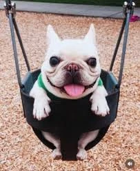
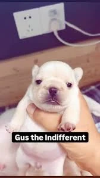
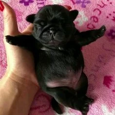

Bagel
Baby golden retriever within the Pibbleology taxonomy —
a baby golden Pibble
representing a different lineage
that still fits the small, goofy aesthetic. See
The Faithful § Bagel.
The language of Pibbleology — drawn from canon, settled fanon, and the daily practice of the faithful across two worlds and many platforms.
Reference
The terms that follow are used across the Pibble Verse Wiki, in TikTok devotionals, in Reddit threads, and in the lived practice of centers everywhere. Canonical status is noted where applicable.
Baby golden retriever within the Pibbleology taxonomy —
a baby golden Pibble
representing a different lineage
that still fits the small, goofy aesthetic. See
The Faithful § Bagel.
The original brown or tan baby French bulldog. The default referent of Pibble when no modifier is given. See The Faithful § Base Pibble.
A bee-adjacent Handheld Pibble variant who never stings humans, owing to a strong bond with them. Awaits fuller revelation.
Material formally affirmed by the Lorewriters. Currently includes the Pibble and Geeble entries. Not to be edited without Lorewriter permission.
Hostile entities targeted by Geebles; implicated in the manufacture of the poisonous Chis Pibble Treats.
Hostile entities blasted by Geebles using laser guns. Paired with Chis in canon as adversaries of the fellowship.
A poisoned counterfeit of the genuine Pibble Treat, priced at 20 Pibuckies (≈ $40). See Sacraments § Chis Pibble Treats.
An entity listed alongside Chis and Chingles in Geeble lore. Accessible details are minimal; awaits fuller revelation.
Community interpretation that fills in gaps not yet canonically affirmed — life stages, color-based classifications, additional variants. Often originates on TikTok and Reddit.
The base referent of Pibble — specifically a baby French bulldog — though the faith recognizes any small, rotund, silly-looking dog who declares themselves.
Canonical green, antennaed alien creature from Geeblorg. Weak powers, can fly, armed with laser guns. Acidic blood; very hard skin.
The language noted on the canonical Pibble entry. In Geeblius, Pibble is rendered Pibble.
The alien world from which Geebles originate. One of the two primary worlds of the Verse, paired with Pibearth.
White Pibble, often with black spots. Among the most recognizable variants. Distinct from Oreo / Yoshi, which inverts the spotting.
A sub-category of exceptionally small Pibbles designed to be carried by humans. The reference point against which Beebles are compared.
The first of the two great affirmations. A self-announcement, treated almost as a verbal compulsion. Forms the doctrinal backbone of the faith and drives much of the community's humor, fanart, and roleplay.
Black-and-white patterned dog in the Pibble taxonomy — predominantly black with white spots. Inverse of the Gmail pattern.
One of the founding Lorewriters credited by the canonical record. Co-author of the Verse's earliest entries.
A brand-style character name surfacing in lore explanations alongside Gmail and Bagel.
Older, larger, more mature form of a Pibble — a life-stage progression. Compare the named character Pebble Mug.
Favorite food of the Geebles. One of the named provisions of the Verse. See Sacraments § Pibberries.
Baby French bulldog (or adjacent small, rotund, silly-looking dog). The central figure of the faith. Canon-tagged.
The companion project referenced at pibble.fun.
Indie game (itch.io) in which the player finds a stranded Pibble, feeds him, washes his belly, and dresses him to find a new home. The sacramental video game of the faith.
The base consumable of the Verse, coveted by Pibbles and Geebles. See Sacraments § Pibble Treats.
A setting from TikTok lore featuring specific named characters. A local-legend space within the broader Verse.
The collaborative meme universe centered on Pibbles, governed loosely by the Pibble Verse Wiki and expanded by TikTok, Reddit, YouTube, Roblox, and indie games. The faith.
Earth viewed through Pibble-centric lore. The default home of Pibbles and humans, and one of the two primary worlds of the Verse.
The Pibbleology's fictional currency. Sample price: 20 Pibuckies (≈ $40) for one Chis Pibble Treat. The Pibucky's true origin remains an open question.
A separate real-world dog breed, distinct from Pibbles. The faith explicitly rejects the undeserved stigma facing real-world pitbulls.
The second of the two great affirmations. A request for affection, grooming, or pampering. Central to the gameplay of Pibble Petz and to most of daily Pibble practice.
Black Pibble, usually solid-coated. The dignified counterpart to the Gmail.
Honored Individuals
Specific Pibbles, named in canon or fanon, who have entered the collective memory of the faithful.



